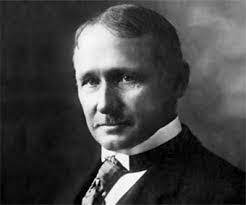
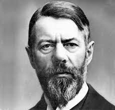
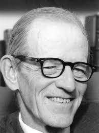
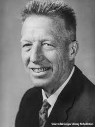

Facultad Nacional de Salud Pública Calle 62 #52-59

Henri Fayol fue un destacado teórico de la administración cuyas ideas han influido significativamente en el desarrollo de la gestión empresarial moderna. Sus catorce principios de administración, que delineó en su obra "Administration Industrielle et Générale" (Administración Industrial y General), son ampliamente reconocidos como fundamentales para la práctica administrativa.
Los principios de la administración son conceptos fundamentales que guían la práctica de la gestión y el liderazgo en las organizaciones. Estos principios representan ideas básicas y universales que ayudan a los administrado res a tomar decisiones, planificar, organizar, dirigir y controlar las actividades dentro de una organización. Los principios de la administración proporcionan una base sólida para la eficacia y la eficiencia en la gestión de recursos humanos, financieros y materiales
Especialización de tareas para aumentar la eficiencia y la productividad.
Definición clara de quién tiene la autoridad para tomar decisiones y quién es responsable de su ejecución.
Mantener el orden y la obediencia dentro de la organización mediante el cumplimiento de reglas y normas establecidas.
Cada empleado debe recibir órdenes de un solo superior para evitar confusiones y conflictos.
Todos los esfuerzos de la organización deben estar dirigidos hacia un mismo objetivo.
Los intereses individuales deben ceder ante los intereses de la organización en su conjunto.
Compensación justa y equitativa para los empleados por su trabajo y contribución a la organización.
Grado en el que la toma de decisiones está concentrada en la cima de la organización.
Cadena de autoridad que va desde el nivel más alto hasta el más bajo de la organización.
Organización adecuada de recursos y actividades para maximizar la eficiencia y la productividad.
Tratar a todos los empleados con imparcialidad y justicia.
Evitar la rotación excesiva de personal para mantener la continuidad y la eficiencia en la organización.
Fomentar la creatividad y la innovación entre los empleados.
Promover un ambiente de colaboración y cooperación entre los miembros de la organización.
¡Dando click sobre los conceptos en la columna de "TEORIAS", puedes encontrar información adicional acerca de cada teoria administrativa!
| TEORIAS | IMAGEN | AUTOR | PRINCIPALES CAACTERISTICAS |
|---|---|---|---|
| Teoría de la gestión científica |  | Frederick Taylor | fue uno de los primeros en estudiar científicamente el desempeño laboral. Los principios de Taylor recomendaban que se usara el método científico para realizar tareas en el lugar de trabajo, en lugar de que el líder confiara en su juicio o en la discreción personal de los miembros del equipo. |
| Teoría de la gestión burocrática> |  | Max Weber | la teoría de la gestión burocrática se centra en estructurar las organizaciones en una jerarquía para que existan reglas claras de gobierno. Sus principios para crear este sistema incluyen una cadena de mando, una clara división del trabajo, la separación de los activos personales y organizacionales del propietario, reglas y regulaciones estrictas y consistentes, un meticuloso mantenimiento de registros y documentación y la selección y promoción de los empleados en función de su desempeño y calificaciones. |
| Teoría de las relaciones humanas |  | Elton Mayor | Esta teoría fue desarrollada por Elton Mayo, quien realizó experimentos diseñados para mejorar la productividad que sentó las bases del movimiento de relaciones humanas. Se centró en cambiar las condiciones de trabajo como la iluminación, los descansos y la duración de la jornada laboral. |
| Teoría X e Y |  | Douglas McGregor | El psicólogo social estadounidense Douglas McGregor introdujo las teorías X e Y en su libro, "El lado humano de la empresa", donde concluyó que dos estilos diferentes de gestión se guían por sus percepciones de las motivaciones de los miembros del equipo. |